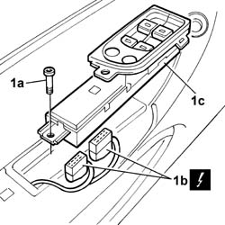

7005M11 Driver's front door electric window control switch - R.R.
- Path
- Procedures > 70 FITTINGS > 7005 passenger compartment front side doors > 7005M FRONT DOOR ELECTRIC WINDOWS > 7005M11 Driver's front door electric window control switch - R.R.
- Kind
- repair procedure (removal / refitting; the operation number is the code)
- Applies to
- all engines; all production periods
- Interactive page
- https://sloeber94.github.io/elrnDB-lThss/en/#/109157
Applies to: all engines; all production periods
 Removing
Removing
 Refitting
Refitting- Disconnect the negative battery terminal.
See in Op. 7005E18 Front side door armrest - R.R.
- Undo the fixing bolt (1a), disconnect the electrical connectors (1b) and remove the switch unit (1c).

Applies to: all engines; all production periods
Refitting
Removing- Connect the electrical connectors and place the switch unit in position.
- Connect the negative battery terminal.
- Check that the switch unit is working properly.
- Tighten the fixing bolt.